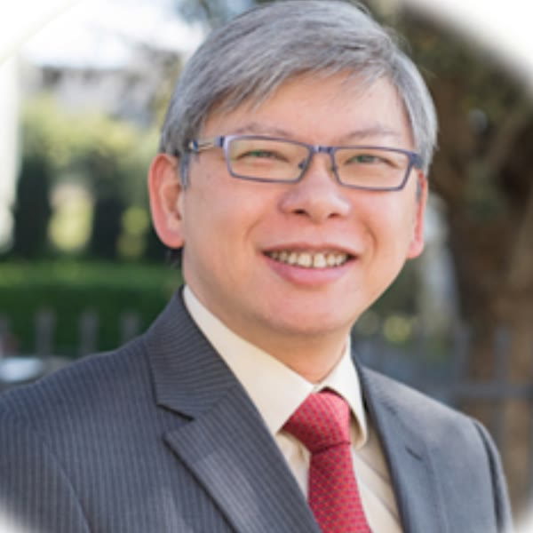

1977 Cantonese 粵語
Our church was founded in 1977 with worship in Cantonese.
教會成立於 1977年。教會剛開始是使用粵語崇拜。
Pictured: the sanctuary, where Cantonese and Mandarin worship today


Since 1977
Cantonese, English and Mandarin
302 W. Commonwealth Ave., Alhambra
One church family, worshipping in three languages.
慕道園華人浸信會 · 始於1977年
一個教會大家庭，以粵語、英語及國語一同敬拜。
初次來訪
We know visiting a church for the first time can feel intimidating. Our goal is simple: to help you feel welcomed, informed, and comfortable from the moment you arrive.
Whether you’re exploring Christianity, looking for a church home, or returning to church after many years, you’ll find authentic community, practical biblical teaching, and people who genuinely care.
三種語言，同屬一家。
Our church was founded in 1977 with worship in Cantonese.
教會成立於 1977年。教會剛開始是使用粵語崇拜。
Pictured: the sanctuary, where Cantonese and Mandarin worship today
During the 1980s, as the number of Mandarin-speaking immigrants in Los Angeles grew rapidly, the church saw the need to share the gospel and provide a spiritual home for new arrivals. Mandarin worship began in 1988.
從八十年代起，教會看到講國語的新移民人數在洛杉磯迅速增長，於是開展國語事工，為新移民群體預備一個屬靈的家，於1988年開始了國語崇拜。
Pictured: Garfield Avenue, Monterey Park (photo: Ken Lund, 2014)

English worship was added in 1991, and the church continues to worship in all three languages.
在1991年教會又增設了英語的崇拜，直到如今，教會一直保持有三種語言的崇拜。
Pictured: children at VBS Magnified! 2025

教牧團隊

Senior Pastor · Cantonese congregation · 主任牧師及粵語堂牧師
Originally from Hong Kong, Pastor Caleb studied at Fuller Theological Seminary and Claremont Graduate University and now serves as our senior pastor.
Pastor · English congregation · 英語堂牧師
Lead pastor of Connect Ministry, the church’s English-language ministry.
Pastor · Mandarin congregation · 國語堂牧師
[One line about this pastor.]
Pastor Caleb is from Hong Kong. After being called to ministry, he studied theology at Fuller Theological Seminary and pursued doctoral studies in theology and philosophy of religion at Claremont Graduate University. He has continued serving and shepherding this church and is its senior pastor.
張健庭牧師來自香港，多年前蒙召在福樂神學院念神學，繼在克箂蒙研究大學進修博士課程專修神學及宗教哲學，後留在本教會事奉與牧養，現任本教會主任牧師。
Tell us you’re coming and someone will look out for you. Or send a prayer request.
Youth, college and fellowship groups meet through the week.
與我們聯絡

交通指南
302 W. Commonwealth Ave.
Alhambra, CA 91801
(626) 289-1284 · info@mpcbc.net
Office hours: [Days, times]